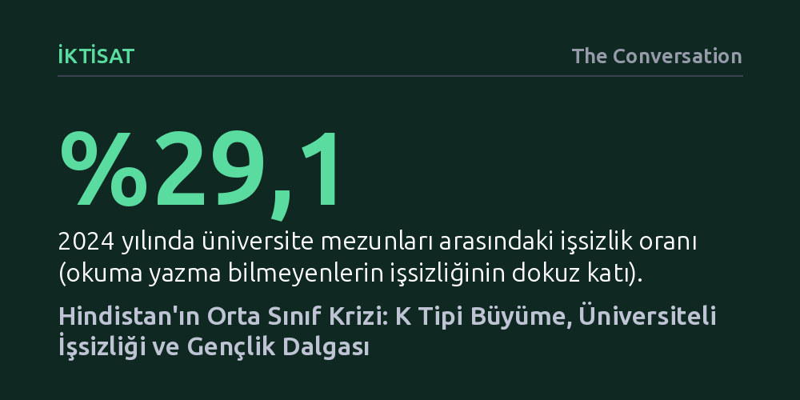

IKTISAT · The Conversation · 2026-09-09
Hindistan'ın yüksek büyüme verilerine rağmen orta sınıf genişlemiyor; K tipi toparlanma zengin elit ile dar gelirliler arasındaki uçurumu derinleştiriyor. Üniversite mezunlarındaki yüzde 29'luk işsizlik ve gerileyen satın alma gücü, eğitimli Z kuşağını kitlesel protestolara sürüklüyor.
Hindistan'ın resmi büyüme rekorlarının, eğitimli gençleri ve orta sınıfı yukarı taşımak yerine gelir dağılımını bozan kırılgan bir illüzyondan ibaret olduğunu gösteriyor.

Hindistan şehirlerinde son dönemde yükselen öğrenci eylemleri, yüzeysel siyasi çekişmelerin ötesinde, ülkenin orta sınıfını vuran derin bir iktisadi buhranın doğrudan sonucudur. 2000'li yıllarda bilişim devrimi ve yabancı sermaye akışıyla yakalanan çift haneli büyüme, Hindistan'da eğitimli profesyonellerden oluşan geniş bir beyaz yakalı sınıf yaratmış ve bu sınıfın kesintisiz büyüyeceği inancını yerleştirmişti. Mühendislerin, yöneticilerin ve yeni girişimcilerin başını çektiği bu toplumsal tabaka, tüketim gücüyle modernleşmenin lokomotifi olarak görülüyordu.
Ne var ki bu iyimser tablo 2010'lu yılların ortasında aniden tıkandı. Narendra Modi'nin kırsaldan şehre göç edenleri tanımlamak için kullandığı "yeni orta sınıf" söylemi kısa sürede buharlaşırken, Pew Araştırma Merkezi verileri orta sınıfın nüfusun yalnızca yüzde 8'inde sıkışıp kaldığını belgeledi. 2013 ile 2024 yılları arasında hanehalkı reel gelirleri tamamen yerinde saydı; imalat, madencilik, enerji ve hizmet gibi ana sektörlerde reel ücretler enflasyon karşısında geriledi.
Pandemi sonrası Hindistan ekonomisi, toparlanma yerine keskin bir "K tipi" büyüme dinamiğine teslim oldu. Alfabenin K harfinin kolları gibi bir ayrışma yaşanıyor: En tepedeki varlıklı elit küreselleşme ve sermaye getirileriyle zenginleşirken, emekçi ve alt orta sınıflar giderek yoksullaşıyor. Bugün kent nüfusunun en yoksul yarısı ayda 5 bin rupiden daha az harcayabilirken, en üstteki yüzde 5 bunun dört katından fazla tüketim yapıyor.
Bu kutuplaşma tüketim kalıplarında açıkça görülüyor. Hindistan nüfusunun yalnızca yüzde 12'si bir otomobil satın alabilecek gelire sahipken, orta sınıfın geleneksel simgesi olan küçük aile arabalarının satışları sert düşüş yaşıyor. Buna karşılık lüks arazi araçları, lüks konut projeleri, beş yıldızlı otel rezervasyonları ve birinci sınıf uçuşlar tarihi rekorlar kırıyor. Salgın sonrası tasarruflarını tüketen kitlelerin borçluluk oranı zirve yaparken, nüfusun dörtte üçü ayda yaklaşık 140 euroya denk gelen 15 bin rupinin altında gelirle hayatta kalmaya çalışıyor.
Görünürdeki bu darlık ile Hindistan yönetiminin gururla sunduğu yıllık yüzde 7 ila 8'lik resmi büyüme oranları arasındaki çelişki, büyümenin gerçek niteliğini sorgulatıyor. Uluslararası Para Fonu (IMF) başta olmak üzere bağımsız iktisatçılar, Hindistan'ın milli gelir hesaplama yöntemlerini ve devasa kayıt dışı sektörün hesaba katılma biçimini uzun süredir eleştiriyor. Uzman değerlendirmeleri, büyüme verilerinin en az 1,5 ila 2 puan şişirildiğini ortaya koyuyor.
Üstelik ülke ekonomisi son on yılda tabanı sarsan üç büyük şok yaşadı. 2016'da tedavüldeki nakit paranın yüzde 85'ini bir gecede silen para reformu, kayıt dışı ekonomide faaliyet gösteren küçük işletmeleri felç etti. Ardından 2017'de hazırlıksız uygulamaya konulan Mal ve Hizmet Vergisi (GST) küçük üreticileri ezdi. Son olarak salgının getirdiği kapanmalar, güvencesiz çalışan milyonlarca insanı memleketlerine göç etmek zorunda bıraktı ve ekonomik toparlanmanın tabana yayılmasını engelledi.
Hindistan'da orta sınıfa tırmanmanın temel basamağı olan yükseköğretim, bugün gençlerin önünde bir tuzağa dönüşmüş durumda. Uluslararası Çalışma Örgütü (ILO) verilerine göre üniversite mezunları arasındaki işsizlik oranı yüzde 29,1 seviyesinde; bu oran okuma yazma bilmeyenlerin işsizlik oranının tam dokuz katı. Aileler çocuklarını okutabilmek için ağır borçlanmalara girerken, işverenlerin nitelik beklentisi ile mezunların eğitimi arasındaki uyumsuzluk istihdamı kilitliyor. Ülkenin en seçkin mühendislik okulları olan Hindistan Teknoloji Enstitülerinde (IIT) dahi işe yerleştirme oranları dramatik şekilde düşüyor.
Yıllarca orta sınıfın can damarı olan bilişim sektörü de artık kitlesel istihdam yaratmıyor. Ülke milli gelirinin yüzde 7,4'ünü oluşturan sektör, yeni mezun mühendis orduları istihdam etmek yerine Küresel Yetkinlik Merkezleri (GCC) üzerinden yapay zekâ ve siber güvenlik alanında tecrübeli uzmanlara yöneliyor. Her yıl 10 milyondan fazla gencin iş gücü piyasasına katıldığı bir ülkede dikey hareketliliğin tükenmesi, eğitimli Z kuşağının hayal kırıklığını doğrudan sokak isyanlarına dönüştürüyor.